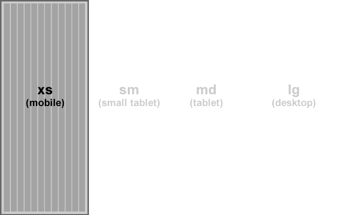
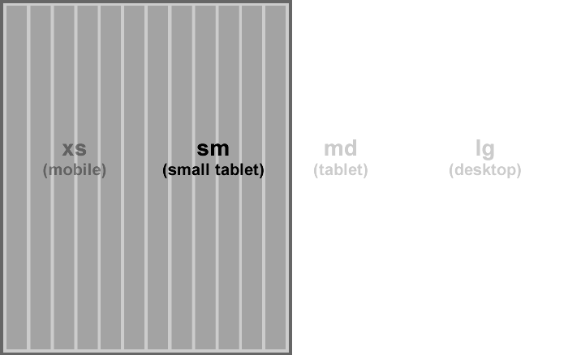
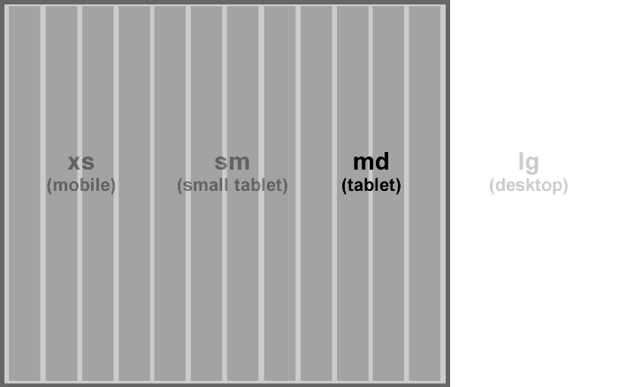
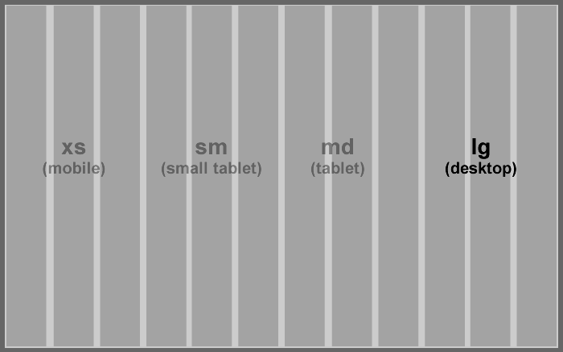

Bootstrap 3
The most popular HTML, CSS, and JavaScript UI framework
Why use a framework?
Because CSS can do this to a developer...
Some of the problems developers have with UI...
HTML and CSS results can be devilishly unpredictable (CSS floats).
Browsers and mobile devices have individual rendering quirks.
CSS, HTML and JavaScript are tightly bound and fragile.
But HTML is very flexible, so it's written differently by each developer. Result: the css breaks.
CSS isn't very scalable on large projects.
What does Bootstrap bring to the party?
Has consistent patterns for writing HTML that developers can follow.
Provides reuseable code snippets for common UI components.
Has a responsive grid which makes building layouts easy across devices.
Contains fixes for common browser and mobile inconsistencies.
Integrates with other frameworks like Angular.js.
Easy to extend with a brand look and feel.
Well documented and has a large community.
Enough with the bullet points already!
Lets see some examples...
The Bootstrap grid
The Bootstrap grid
The Bootstrap grid
The Bootstrap grid
Keep on coding!